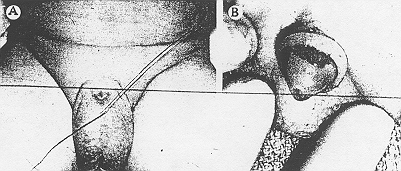
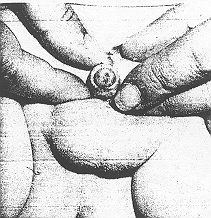

THE CIRCUMCISION REFERENCE LIBRARY
CONCEALED PENIS: A COMPLICATION OF NEONATAL CIRCUMCISION
From the Section on Urology and Plastic Surgery, Department of Surgery, Jersey Shore Medical Center, Neptune Center, New Jersey
Circumcision is probably the most commonly performed operation.1 With the evolution of a more sophisticated society and the presentation of ideas associating preputial tissue and smegma with neoplasia and psychological problems, circumcision has been increasingly requested and demanded. Accordingly the vast number of circumcisions, either ritualistic or cosmetic have led to a gradually increasing number of complications, such as meatal stenosis and ulcer, hemorrhage, sepsis, denudation of penile skin, laceration, glandular injuries, gangrene, preputial cysts and fistula. Recently we encountered a case of concealed penis which was detected when the child was 5 weeks old. A review of the literature revealed 4 previously recorded cases.2-4
CASE HISTORY
Shortly after the spontaneous delivery of a normal-appearing boy, urologic consultation was requested because of a small penis. Examination revealed an exceptionally deep prepubertal fat pad with a penis that was normal on palpation. Circumcision was performed with the Hollister-Plastibell. When the child was 5 weeks old he was examined by the pediatrician because his mother could not find his penis. Examination revealed normal scrotal development with a rather deep prepubertal fat pad and an area of erythema, puckering and scar tissue. There was a pin point opening (fig. 1, A) through which a fine stream of crystal clear urine could be expressed with pressure. The penis could be palpated beneath the tissue.
|  Fig 1. A, concealed penis 5 weeks post-neonatal circumcision. B, adhesions disrupted |
Exploration via transverse incisions on either side of the opening exposed the glans which had some adhesions around the site of circumcision. These adhesions were disrupted (fig. 1, B) and the edges of the transverse incisions were sutured to the mucosa at the coronal sulcus.
|  Fig 2. Eleven months postoperative with glans readily visible. |
Postoperatively, the mother was taught to clean the area and to retract the deep prepubertal fat pad from the glans. When the child was 11 months old the glans was freenly visible. (fig. 2) An additional operation is not anticipated.
DISCUSSION
Penile concealment, although rare, poses several problems with regard to the performance and followup of newborn circumcision. Besides the cosmetic deteriorization [sic] of the child’s genital area, the overwhelming problem is functional.
Although the cause of this entity can only be postulated, the most commonly accepted theory is the tendency of the penile shaft to retract into a deep prepubertal fat pad. This disappearance, although temporary, can became more permanent by the reaction of the newly formed circular mucocutaneous union with cicatrization. The puckering scar tissue builds up, closes over the retracted penis and completely entombs it in a pseudosac with pinpoint opening for the egress of urine. Fortunately, the glans around the meatus is not involved in this scarring process.
Recently, Trier and Drach suggested that inadequate separation of the inner surface of the prepuce from the glans, coupled with the use of a circumcision device, can lead to the problem of penile concealment.
Since neonatal circumcision is so frequently performed with some type of device, it is our opinion that this method is here to stay. Therefore, we suggest a more adequate disruption of adhesions and more aggressive followup in the case of newborn circumcision. The obstetrician and/or pediatrician should examine the child more frequently. The mother should be instructed in cleansing the genital area and retracting the skin around the penis. This is especially true in a child with a deep prepubertal fat pad. By so doing, the entity of penile concealment may be eliminated.
SUMMARY
A case of concealed penis has been presented with a discussion of the possible causes.
ADDENDUM
Since writing this paper, I have seen a second case of concealed penis following newborn circumcision. The patient had a repeat circumcision at the age of 2 months.
Accepted for publication June 29, 1973.
1 Gairdner, D.: The fate of the foreskin:
study of circumcision. Brit Med. J. 1: 1433,
1949.
2 Byars L. T. and Trier,
W. C.: Some complications of circumcision and their surgical
repair. Arch. Surg.., 76: 477, 1958.
3 Shulman, J., Ben-Hur,
N, and Neuman Z.: Surgical complications of circumcision.
Amer. J. Dis. Child., 107: 149, 1964.
4 Trier, W. C. and Drach,
G. W.: Concealed
penis: another complication of circumcision. Amer. J.
Dis. Child., 125: 276, 1973.
http://www.cirp.org/library/complications/talarico1/